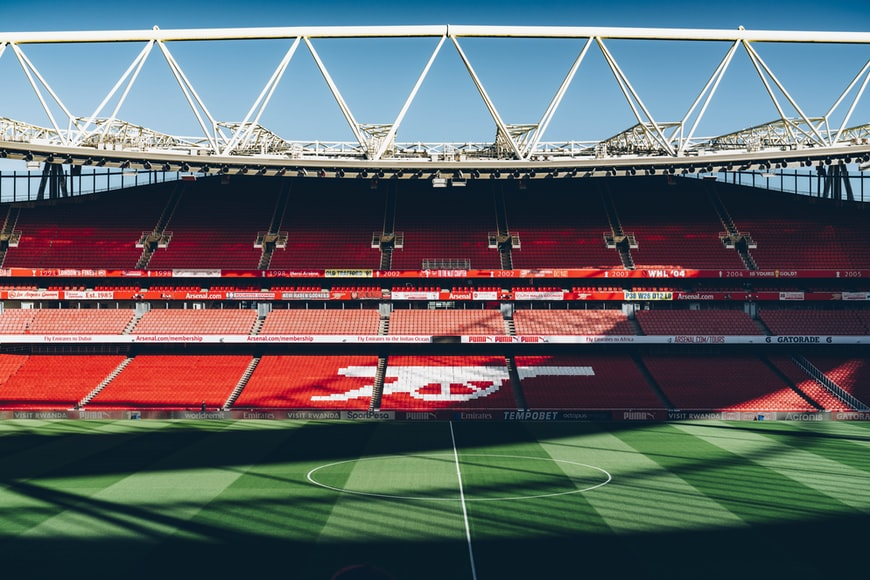

Fun Club
In today's time, Arsenal Football Club is one the most widely recognized English clubs around the world. In the last decade or so, AFC isn't a top competing club, but they still manage to win some silverware from time to time. Their main trophy nowadays is the FA cup which they have won 14 times, that is a record. No one ever won it that many times.
I feel right now Arsenal is far away from winning the premier league but ever since Mikel Arteta has been named the coach of the club I feel highly optimistic. Every time they have a match I have goosebumps, especially when they score a goal and win the game. there is no such feeling as winning a game and mainly winning a title. So yea, If you never watched AFC or football in general, I highly suggest you to start. I guarantee you won't regret it.